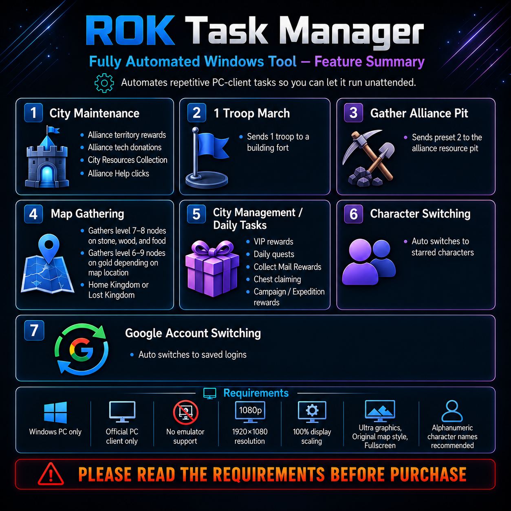

01
City Maintenance
Automates alliance territory rewards, tech donations, alliance help, and resource bubble collection.
ROK Task Manager automates repetitive Rise of Kingdoms PC-client routines across your characters and accounts, so you can spend less time clicking through the same tasks every day.

Choose the routines you want, start the task cycle, and let ROK Task Manager handle the repetitive sequence.
Automates alliance territory rewards, tech donations, alliance help, and resource bubble collection.
Finds qualifying alliance builds, uses fallback logic when needed, and sends a one-troop march.
Opens the Alliance Resource Center, detects the target state, and creates the required march.
Supports food, wood, stone, gold or all resources with coordinate reading and duplicate-node protection.
Handles selected daily routines such as VIP rewards, mail, quests and campaign or expedition rewards.
Moves through starred characters and configured Google accounts while tracking completed cycles.
Checks active troop capacity and skips troop-based routines when the queue is already full.
Includes network disconnect handling, loading recovery, visual confirmation, and safe pause/resume controls.
Reduce repetitive account upkeep and keep your routine consistent across more characters.
ROK Task Manager relies on a consistent screen layout and visual detection. These settings matter.
Explore the major automation workflows included in ROK Task Manager.
Choose your plan and complete checkout securely with PayPal.
Download the Windows build and activate your license.
Use the supported client, resolution, scaling and graphics settings.
Choose the routines you want ROK Task Manager to perform.
Run the workflow and monitor status from the task manager window.
$50.00 USD every month. This checkout is currently connected to PayPal Sandbox for testing only. No real money is charged.
One Windows PC license. Subscription renews monthly until cancelled.
Payment approval alone does not unlock the download yet. Server-side PayPal verification will be connected next, then a verified customer can receive the license and private download access.
Need help before buying? Join the Discord and ask in the ROK Task Manager support channels.
Join DiscordNo. This build is designed for the official Windows PC client.
Use 1920×1080 resolution, 100% display scaling, fullscreen, Ultra graphics, and the original map style.
Yes. It can move through starred characters, track completed characters, and continue the task cycle after loading.
Yes, when accounts are configured in the supported setup. It can switch to the next account and continue the cycle after the game loads.
The task manager can detect 5/5 active troops, skip troop-related routines, and continue eligible city tasks.
No. ROK Task Manager is an independent third-party tool by Loner's Corner and is not affiliated with or endorsed by the game's publisher or developer.
Review the requirements, choose your plan, and subscribe securely with PayPal.